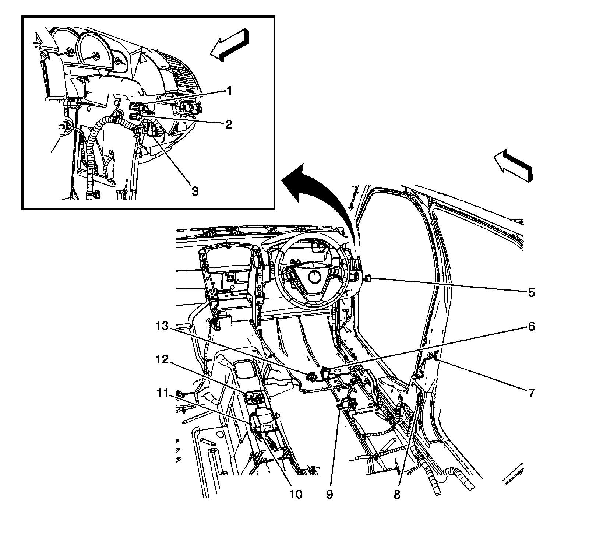
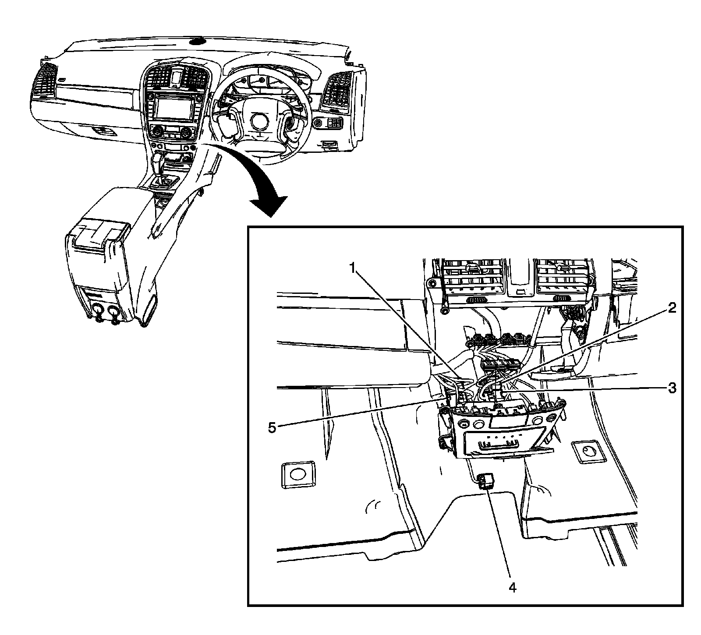
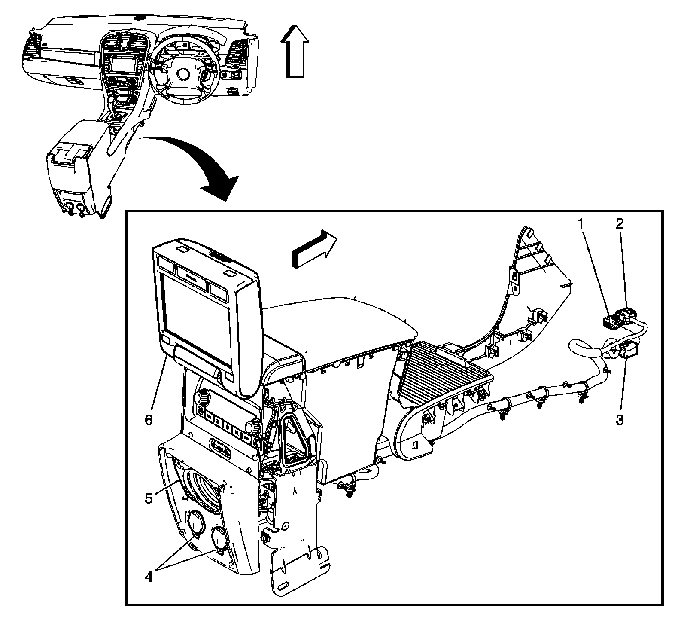

Body Harness
Harness Routing Views (RHD)
Body Harness Routing - Front Engine Compartment

1 - X118
2 - X105
3 - X101
4 - X117
5 - Body Harness
Body Harness Routing - Right Side of Passenger Compartment

1 - X203
2 - X201
3 - X209
4 - X600
5 - G201
6 - X300
7 - X800
8 - Right C-Pillar
9 - Yaw and Lateral/Long Acceleration Sensor
10 - G306
11 - Inflatable Restraint Sensing and Diagnostic Module (SDM)
12 - Rollover Sensor
13 - X301
Body Harness Routing - Left Side of Passenger Compartment

1 - X206
2 - X207
3 - X307
4 - X205
5 - X200
6 - X306
7 - JX300
8 - Left C-Pillar
9 - X700
10 - G200
11 - X500
Body Harness - Left Rear Cargo Area

1 - X403
2 - X404
3 - G402
Body Harness - Right Rear Cargo Area

1 - X408
2 - X401
3 - X410
4 - G401
5 - Data Link Resistor
6 - X411
7 - JX304
8 - X414
9 - X416
Body Harness - Rear Underbody

1 - X402
2 - X420
Body Harness Routing - Splices

1 - Fuse Block - Left Rear
2 - J305
3 - J309
4 - J410
5 - X205
6 - Inflatable Restraint Sensing and Diagnostic Module (SDM)
7 - Fuse Block - Right Rear
8 - J406
9 - J304
10 - J303
11 - J407
12 - J402
13 - J403
14 - J404
15 - J416
16 - J415
I/P Harness Routing - Floor Console Inlines

1 - X205
2 - X304
3 - X313
4 - X302
5 - X200
Floor Console Harness Routing

1 - X313
2 - X312
3 - X304
4 - Auxiliary Power Outlets - Center Console
5 - Speaker - Center Console (UQ5)
6 - Rear Video Display (U42)
Headliner (CF5/CB3/Standard)

1 - X317
2 - X410 (CF5/C3B)
3 - X415 (CF5/C3B)
4 - X408
5 - X414
6 - Frame - Right Side
Headliner Splices

1 - J312
2 - J314
3 - J311
4 - J319 (CF5/C3B)
5 - J308 (C57)
6 - J408 (C57)
7 - J307 (C57)